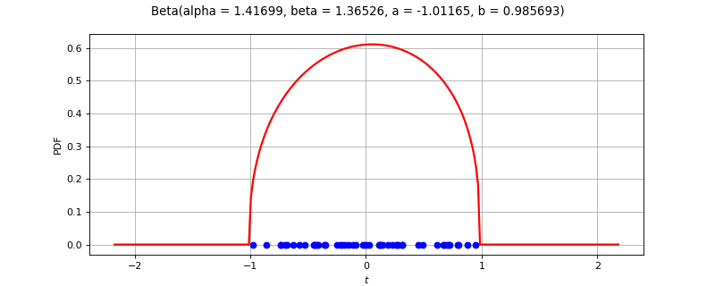

BetaFactory¶
(Source code, png)
{kind=link}

- class BetaFactory(*args)¶
Beta factory.
- Available constructor:
BetaFactory()
Let
 be the sample sample size.
Let
be the sample sample size.
Let  be the sample minimum and
be the sample minimum and  be the sample maximum.
Let
be the sample maximum.
Let  be the sample range:
be the sample range:
Then the distribution bounds are computed from the equations:
![\begin{eqnarray*}
\hat{a} &=& x_{(1)} - \frac{\delta}{n + 2}, \\
\hat{b} &=& x_{(n)} + \frac{\delta}{n + 2}.
\end{eqnarray*}]()
Let
 be the sample mean and
be the sample mean and  be the sample
unbiased variance.
The remaining parameters are estimated using the method of moments:
be the sample
unbiased variance.
The remaining parameters are estimated using the method of moments:![\begin{eqnarray*}
\hat{\alpha} & = & \left(\frac{\bar{x} - \hat{a}}{\hat{b} - \hat{a}}\right) \left( \frac{\left(\hat{b} - \bar{x}\right)\left(\bar{x} - \hat{a}\right)}{\hat{\sigma}^2}-1\right) \\
\hat{\beta} & = & \left(\frac{\hat{b} - \bar{x}}{\bar{x} - \hat{a}}\right) \hat{\alpha}
\end{eqnarray*}]()
See also
Examples
In the following example, the parameters of a
Betaare estimated from a sample.>>> import openturns as ot >>> ot.RandomGenerator.SetSeed(0) >>> size = 10000 >>> distribution = ot.Beta(0.2, 0.4, -1.0, 2.0) >>> sample = distribution.getSample(size) >>> factory = ot.BetaFactory() >>> estimated_dist = factory.build(sample) >>> estimated_beta = factory.buildAsBeta(sample)
Methods
build(*args)Build the distribution.
buildAsBeta(*args)Build the Beta distribution.
buildEstimator(*args)Build the distribution and the parameter distribution.
Accessor to the bootstrap size.
Accessor to the object's name.
getId()Accessor to the object's id.
getName()Accessor to the object's name.
Accessor to the object's shadowed id.
Accessor to the object's visibility state.
hasName()Test if the object is named.
Test if the object has a distinguishable name.
setBootstrapSize(bootstrapSize)Accessor to the bootstrap size.
setName(name)Accessor to the object's name.
setShadowedId(id)Accessor to the object's shadowed id.
setVisibility(visible)Accessor to the object's visibility state.
- __init__(*args)¶
- build(*args)¶
Build the distribution.
Available usages:
build(sample)
build(param)
- Parameters:
- sample2-d sequence of float
Sample from which the distribution parameters are estimated.
- paramCollection of
PointWithDescription A vector of parameters of the distribution.
- Returns:
- dist
Distribution The built distribution.
- dist
- buildAsBeta(*args)¶
Build the Beta distribution.
Available usages:
buildAsBeta(sample)
buildAsBeta(param)
- Parameters:
- sample2-d sequence of float
Sample from which the distribution parameters are estimated.
- paramCollection of
PointWithDescription A vector of parameters of the distribution.
- Returns:
- dist
Beta The built distribution.
- dist
- buildEstimator(*args)¶
Build the distribution and the parameter distribution.
- Parameters:
- sample2-d sequence of float
Sample from which the distribution parameters are estimated.
- parameters
DistributionParameters Optional, the parametrization.
- Returns:
- resDist
DistributionFactoryResult The results.
- resDist
Notes
According to the way the native parameters of the distribution are estimated, the parameters distribution differs:
Moments method: the asymptotic parameters distribution is normal and estimated by Bootstrap on the initial data;
Maximum likelihood method with a regular model: the asymptotic parameters distribution is normal and its covariance matrix is the inverse Fisher information matrix;
Other methods: the asymptotic parameters distribution is estimated by Bootstrap on the initial data and kernel fitting (see
KernelSmoothing).
If another set of parameters is specified, the native parameters distribution is first estimated and the new distribution is determined from it:
if the native parameters distribution is normal and the transformation regular at the estimated parameters values: the asymptotic parameters distribution is normal and its covariance matrix determined from the inverse Fisher information matrix of the native parameters and the transformation;
in the other cases, the asymptotic parameters distribution is estimated by Bootstrap on the initial data and kernel fitting.
- getBootstrapSize()¶
Accessor to the bootstrap size.
- Returns:
- sizeinteger
Size of the bootstrap.
- getClassName()¶
Accessor to the object’s name.
- Returns:
- class_namestr
The object class name (object.__class__.__name__).
- getId()¶
Accessor to the object’s id.
- Returns:
- idint
Internal unique identifier.
- getName()¶
Accessor to the object’s name.
- Returns:
- namestr
The name of the object.
- getShadowedId()¶
Accessor to the object’s shadowed id.
- Returns:
- idint
Internal unique identifier.
- getVisibility()¶
Accessor to the object’s visibility state.
- Returns:
- visiblebool
Visibility flag.
- hasName()¶
Test if the object is named.
- Returns:
- hasNamebool
True if the name is not empty.
- hasVisibleName()¶
Test if the object has a distinguishable name.
- Returns:
- hasVisibleNamebool
True if the name is not empty and not the default one.
- setBootstrapSize(bootstrapSize)¶
Accessor to the bootstrap size.
- Parameters:
- sizeinteger
Size of the bootstrap.
- setName(name)¶
Accessor to the object’s name.
- Parameters:
- namestr
The name of the object.
- setShadowedId(id)¶
Accessor to the object’s shadowed id.
- Parameters:
- idint
Internal unique identifier.
- setVisibility(visible)¶
Accessor to the object’s visibility state.
- Parameters:
- visiblebool
Visibility flag.